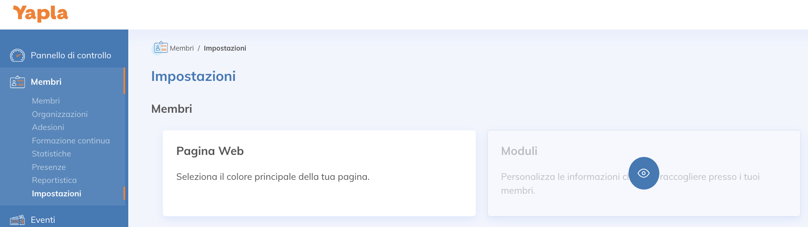
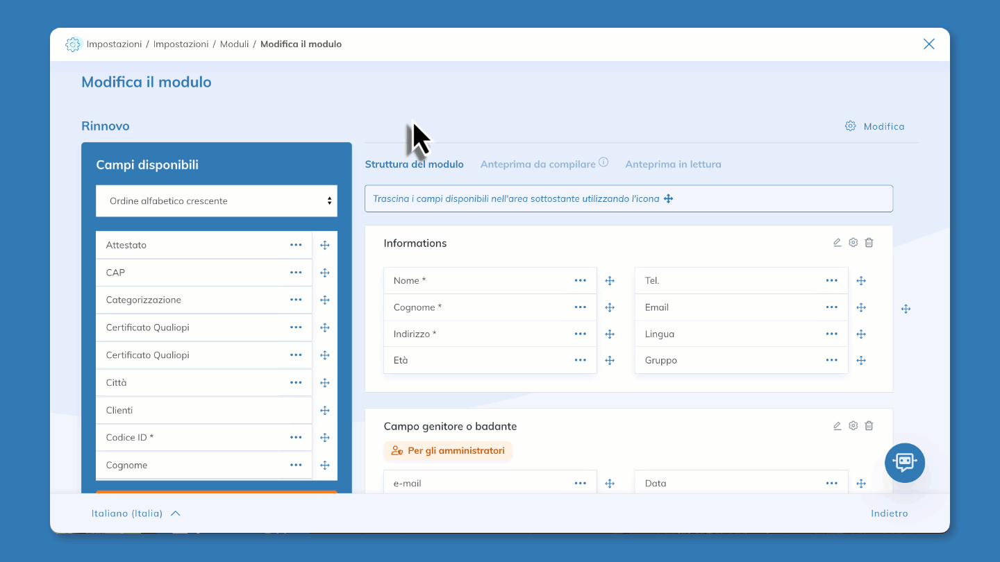
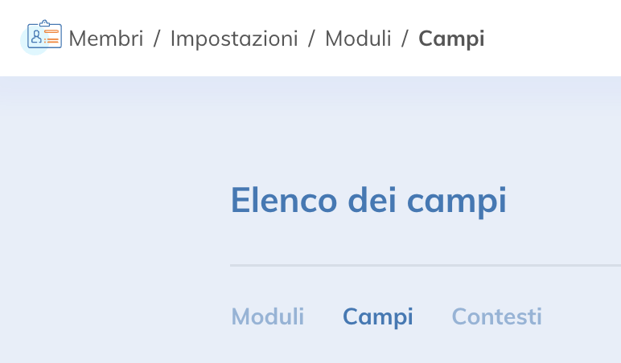
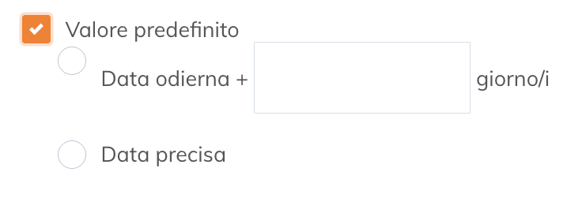
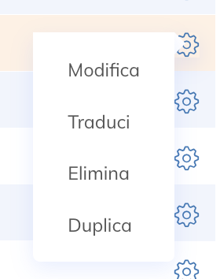
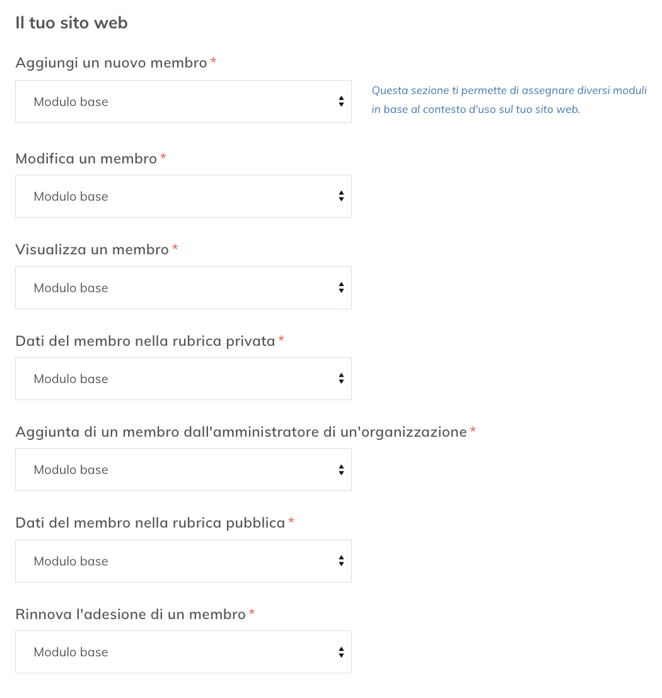
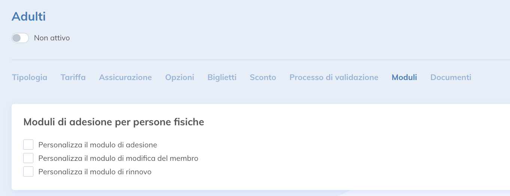

In Yapla, i moduli fanno da inserimento dati per raccogliere informazioni sui tuoi membri, i partecipanti agli eventi o i donatori. Ogni modulo contiene campi che puoi personalizzare in base alle tue esigenze. Questi moduli vengono compilati dagli utenti stessi (membri, partecipanti o donatori). I moduli sono anche utilizzati per registrare le informazioni visibili nell’account Yapla per gli amministratori.
In questo articolo:
- Funzionalità relative ai moduli
- Creare o modificare un modulo
- Personalizzazione avanzata dei moduli
- Ambienti e contesti
- FAQ
Funzionalità relative ai moduli
Tutte le funzionalità di Yapla che raccolgono informazioni ti permettono di creare moduli. Puoi creare moduli per:
- Membri: membri singoli, organizzazioni o famiglie
- Eventi: partecipanti (e responsabili delle iscrizioni), relatori (funzionalità Premium)
- Attività: partecipanti
- Sessioni: partecipanti
- Donazioni: donatori, partecipanti alle campagne p2p, team delle campagne p2p
- Dati: elementi dell’oggetto
- Contatti: contatti, organizzazioni
Dove configurare i moduli
Vai alla funzionalità di interesse (ad es. Membri), quindi clicca su Impostazioni > Moduli.
Nota: Per le campagne di adesione semplificate, vai su Membri > Campagne > seleziona la tua campagna > Moduli.
Questa pagina ti dà accesso all’elenco dei campi e dei moduli. Qui puoi modificarli.

Creare o modificare un modulo
Per creare o modificare un modulo, vai sulla funzionalità interessata, clicca su Impostazioni, poi su Moduli. Scegli un modulo o clicca su + Aggiungi un modulo. Dai un nome al tuo modulo. Se è collegato a un gruppo, puoi aggiungerlo.
Nota: Per le campagne di adesione semplificate, vai a Membri > Campagne > seleziona la tua campagna > Moduli.
Editor dei moduli
Aggiungere un campo – seleziona un campo esistente dall’elenco dei campi a sinistra, quindi trascinalo nella posizione desiderata nel modulo.
Importante: vedi la FAQ riguardo i campi Paese e Provincia.
Creare un campo personalizzato – clicca su + Crea un nuovo campo, seleziona il tipo di campo desiderato dall’elenco, quindi clicca su Avanti. Completa la pagina successiva per configurare correttamente il campo.
- Informazioni sul nome tecnico: È il nome del campo nel database, generato automaticamente dal nome inserito (senza spazi o caratteri speciali) e modificabile solo al momento della creazione. È invisibile agli utenti ed è utilizzato per il corretto funzionamento dell’account, la generazione di parole chiave dinamiche e, in alcuni casi, la sincronizzazione dei dati tra funzionalità (ad es. per precompilare un modulo di iscrizione per un partecipante che ha già compilato un modulo in passato: i nomi tecnici devono essere identici e i campi devono essere dello stesso tipo. I campi a scelta multipla non possono essere sincronizzati).
Rendere obbligatorio un campo – quando crei un campo personalizzato, seleziona l’opzione Risposta obbligatoria. In caso contrario, se è un campo già esistente, clicca su ... a destra del campo desiderato, poi su Modifica e seleziona Risposta obbligatoria. Se invece vuoi bypassare la risposta obbligatoria solo per un determinato modulo, clicca su Visualizzazione del campo e seleziona Ignora l’opzione campo obbligatorio.
Evitare i doppioni – quando crei un campo personalizzato, seleziona l’opzione Non ammettere duplicati tra gli elementi. In caso contrario, se è un campo già esistente, clicca su ... a destra del campo desiderato, poi su Modifica e seleziona Non ammettere duplicati tra gli elementi. Questa opzione è utile, ad esempio, per evitare doppioni nelle iscrizioni.
Creare una nuova sezione – clicca su + Aggiungi una sezione. Dai un nome e, se necessario, una descrizione. Seleziona e trascina i campi desiderati all’interno. È possibile rendere questa sezione visibile solo agli amministratori selezionando la casella Mostra questa sezione solo agli amministratori.
Modificare l’ordine dei campi – clicca e trascina i campi nell’ordine o nella sezione desiderata.
Eliminare un campo – clicca su ... a destra del campo, poi su Ritira. Puoi anche trascinare il campo di nuovo nell'elenco dei campi per rimuoverlo dal modulo.

Anteprima e test del modulo
Nell’editor dei moduli sono disponibili tre schede per aiutarti a visualizzare l’anteprima e testare il modulo:
- Struttura del modulo: aggiungere e modificare i campi.
- Anteprima da compilare: visualizzare e testare il modulo così come apparirà al momento della compilazione.
- Anteprima in lettura: visualizzare il modulo così come apparirà in modalità di sola lettura.
Personalizzazione avanzata dei moduli
Gestire i campi personalizzati

Se hai creato campi personalizzati in uno o più moduli, e vuoi visualizzarli o modificarli rapidamente, vai all’elenco dei moduli in una qualsiasi funzionalità, poi clicca sulla sotto-scheda Campi.
Questa sotto-scheda contiene tutti i campi personalizzati creati in tutti i tuoi moduli. Nota che non è possibile cambiare il tipo di un campo già creato. Puoi anche creare nuovi campi da questa pagina cliccando su + Aggiungi un campo.
Quando crei un nuovo account Yapla, il sistema crea automaticamente campi nativi (predefiniti). Questi campi raccolgono informazioni di base e non possono essere rimossi. I campi nativi possono variare a seconda del paese associato al tuo account Yapla. Ecco l’elenco dei campi nativi.
Di seguito una panoramica dei tipi di campi disponibili e delle impostazioni per la creazione di un campo personalizzato:
| Casella da selezionare | Consente agli utenti di rispondere affermativamente (casella selezionata) o negativamente (casella non selezionata). Questo tipo di campo consente la creazione di una sola casella di spunta. |
| Consenso | Abilita la richiesta di consenso con una casella da selezionare. Quando è selezionata, vengono registrati la data e l’indirizzo IP dell’utente che l’ha selezionata. |
| Data | Consente agli utenti di inserire o selezionare una data da un calendario visualizzato in una finestra pop-up. Un’opzione consente anche di abilitare la gestione dell’orario. |
| Immagine | Consente agli utenti di caricare un’immagine. |
| Consente agli utenti di inserire un indirizzo email, che viene verificato per garantire un formato corretto. | |
| Elenco di selezione | Consente agli utenti di selezionare un valore da un menu a tendina che puoi definire. |
| Risposta a scelta unica (radio) | Consente agli utenti di scegliere una sola risposta tra le opzioni fornite. |
| Risposta a scelta multipla (checkbox) |
Consente agli utenti di scegliere più risposte tra le opzioni fornite. La funzione Attiva il campo con compilazione automatica permette alla persona di digitare manualmente le proprie scelte invece di selezionare ogni casella. |
| Oggetto | Consente agli utenti di visualizzare l’associazione collegata all’istanza dell’oggetto. |
| Password | Consente agli utenti di inserire una password. |
| Telefono | Consente agli utenti di inserire un numero di telefono. La formattazione viene applicata automaticamente in base al paese. |
| Testo | Consente agli utenti di inserire qualsiasi combinazione alfanumerica. |
| Indirizzo | Consente agli utenti di inserire un indirizzo. |
| URL | Consente agli utenti di inserire qualsiasi indirizzo web valido. Quando l’utente clicca sul valore inserito in questo campo, l’URL si apre in una nuova finestra del browser. |
| Area di testo | Consente agli utenti di inserire fino a 32.000 caratteri su più righe. |
| Campi | Applicazione | Spiegazione |
|---|---|---|
| Nome del campo | Tutti | Denominazione del campo. Può essere modificata in qualsiasi momento. Questa denominazione viene utilizzata nei moduli Yapla e visibile per gli utenti. |
| Nome tecnico | Tutti | Nome tecnico del campo. Questo nome non può essere modificato dopo la creazione del campo. |
| Descrizione | Tutti | Descrizione del campo. |
| Obbligatorio | Tutti | Consente di rendere un campo obbligatorio. |
| Limite di caratteri | Testo | Consente di definire il numero massimo di caratteri per il campo. |
| Validazione | Tutti | Consente di definire una regola di validazione per il campo. |
| Normalizzazione | Tutti |
Consente di definire un formato applicato a tutte le risposte:
|
| Valore predefinito | Tutti | Consente di definire il valore predefinito di un campo. |
Tipi di campi avanzati: per la funzionalità Membri
| Tipologia di adesione | Consente di visualizzare la tipologia di adesione. Non consente di modificare la tipologia di adesione di un membro. |
| Password | Consente agli utenti di inserire una password per un membro. |
| Stato del membro | Lo stato attuale del membro. |
Creare moduli dinamici
È possibile rendere i tuoi moduli dinamici per ottenere maggiore flessibilità nelle domande. Mostra o nascondi campi o sezioni aggiuntive a seconda delle risposte fornite. Per saperne di più sulla creazione di moduli dinamici, consulta questo articolo.
Specificità del campo Data
- Visualizzare l’età invece della data di nascita – Quando crei un nuovo campo di tipo Data, seleziona la casella Trattare come data di nascita. Apparirà il campo Opzioni di visualizzazione, in cui scegliere se mostrare l’informazione come data, età o entrambi.
- Aggiungere criteri alla data – è possibile aggiungere una data di inizio e una data di fine. Questo consente di selezionare una data all’interno di questo intervallo. Se l’utente seleziona una data al di fuori di questo intervallo, apparirà un messaggio di errore.
-
Aggiungere un campo Data dinamico – In alcuni casi, può essere necessario inserire una data di follow-up visibile solo in amministrazione. Ad esempio, al momento dell’iscrizione di un nuovo membro, è possibile avere un campo che appare in maniera dinamica, in base alla data di iscrizione, e a una data di follow-up per questo membro.

Per questo, quando crei un campo di tipo Data, seleziona Valore predefinito. La data odierna corrisponde alla data in cui il modulo viene compilato. Aggiungi il numero di giorni aggiuntivi richiesti prima del follow-up o una data specifica. Una volta creato il campo e aggiunto al modulo, clicca su ... e poi su Sola lettura.
Tradurre la denominazione dei moduli
Se hai un sito bilingue, puoi tradurre la denominazione dei moduli. Nell’elenco dei moduli, clicca sull’icona dell’ingranaggio a destra di ciascun modulo, poi su Traduci.

La funzione Traduci apre il sistema di gestione delle lingue. Scopri come gestire le traduzioni in Yapla.
Ambienti e contesti
È possibile visualizzare moduli diversi a seconda dell’ambiente o del contesto di applicazione. Una volta nell’elenco dei moduli, vai alla sotto-scheda Contesti.
Ambienti
Due ambienti ti permettono di visualizzare i moduli di tua scelta. Puoi, ad esempio, creare un modulo con campi limitati per il tuo sito web e un modulo più complesso, con campi aggiuntivi utilizzati solo per la gestione interna.
Gli ambienti sono quindi:
- Yapla – corrisponde al pannello di controllo del tuo account Yapla. Solo gli amministratori vi hanno accesso.
- Sito web – corrisponde a ciò che vedono i visitatori. Qui vengono visualizzati i moduli che possono compilare.
Contesti
Un contesto corrisponde all’applicazione o al contesto d’uso del modulo. Ad esempio, il contesto Dati del membro nella rubrica pubblica corrisponde alla sezione del tuo sito web dove è possibile visualizzare i dettagli di un membro in una directory. Il modulo selezionato mostrerà i dati precedentemente compilati in quel modulo. Pertanto, sarebbe opportuno scegliere un modulo che non contenga, ad esempio, l’indirizzo di casa del membro.
Il caso delle note in amministrazione – un altro esempio di utilizzo dei contesti è la possibilità di aggiungere note in amministrazione, visibili solo agli amministratori, nei moduli dei membri. I contesti ti permettono di creare due moduli, uno contenente un campo per note interne che sarà collegato al contesto Modifica di un membro nell’ambiente Yapla. Sarà quindi esclusivamente per gli amministratori.
Di default, lo stesso modulo viene applicato a tutti i contesti d’uso. Non tutti i contesti si applicano necessariamente al tuo utilizzo di Yapla o del tuo sito web. Tuttavia, è facile adattarli alle tue esigenze. Ogni funzionalità ha contesti diversi. Puoi trovarli sotto la scheda principale di ciascuna funzionalità > Impostazioni > Moduli > Contesti.

Esempi di contesti relativi ai moduli della funzionalità Membri.
Prima assicurati che il tuo modulo sia stato creato. Sotto ciascun contesto d’uso, seleziona un modulo tra quelli creati nella funzionalità corrispondente, poi salva. Lo stesso modulo può essere associato a più contesti e puoi modificare i moduli collegati ai contesti in qualsiasi momento.
Contesti disponibili per funzionalità e ambiente:
Sito web |
|
|---|---|
| Aggiungi un nuovo membro | Modulo applicato durante la fase di registrazione del processo Diventa membro del modulo Area membri su una pagina del sito web. Questo modulo verrà quindi visualizzato quando un nuovo membro si iscrive tramite il tuo sito web. |
| Modifica un membro | Si applica quando un membro connesso visualizza il proprio profilo nella sua Area membri. Nella configurazione del modulo puoi scegliere quali campi sono di sola lettura e quali campi sono modificabili. Questo modulo consente quindi al membro di aggiornare le informazioni della propria scheda tramite i campi modificabili. Compare anche quando un responsabile di un’organizzazione visualizza un membro che fa parte della sua organizzazione. |
| Dati del membro nella rubrica privata |
Si applica quando un membro loggato visualizza la scheda di un altro membro dalla rubrica dei membri nella sua Area membri. La directory privata mostra tutti i membri attivi dell’associazione. Questa directory è privata, poiché è accessibile solo ai membri identificati tramite l’Area membri. |
| Aggiunta di un membro da parte di un amministratore di un'organizzazione | L'amministratore di un'organizzazione può aggiungere un membro alla propria organizzazione tramite il menu La tua organizzazione nella propria Area membri. Una volta che il responsabile clicca su Aggiungi un membro, inizia il processo di aggiunta del nuovo membro e verrà visualizzato il modulo associato a questo contesto nella fase di registrazione. |
| Dati del membro nella rubrica pubblica |
Il modulo definito per il contesto Dati del membro nella rubrica pubblica viene visualizzato durante le ricerche nel modulo Rubrica dei membri del tuo sito web. Oltre ai contesti di utilizzo globali applicabili a tutte le directory pubbliche, puoi definire un contesto specifico per una determinata rubrica. |
| Rinnova l'adesione di un membro |
Il modulo associato al contesto Rinnova l'adesione di un membro viene visualizzato quando un membro rinnova la propria iscrizione dalla sezione Le tue adesioni della propria Area membri. Questo modulo verrà mostrato nella fase di registrazione del processo di rinnovo dell’iscrizione. |
Yapla |
|
| Aggiungi un nuovo membro | Il modulo associato all’aggiunta di un membro viene visualizzato quando aggiungi un membro alla tua associazione direttamente dalla funzionalità Membri. |
| Modifica di un membro | Il modulo associato alla modifica di un membro viene visualizzato quando modifichi la scheda di un membro esistente. |
| Visualizzazione di un membro | Il modulo associato alla visualizzazione di un membro corrisponde ai campi mostrati nella scheda di un membro. |
Sito web |
|
| Iscrizione di un partecipante |
|
| Iscrizione semplificata per i partecipanti aggiuntivi | Contesto utilizzato solo se l’opzione modulo di iscrizione semplificata per i partecipanti aggiuntivi è abilitata – si applica a partire dal partecipante numero 2. |
Yapla |
|
| Aggiungi una nuova iscrizione | Contesto utilizzato all'aggiunta di un partecipante. |
| Modifica un’iscrizione | Contesto utilizzato quando si modifica la scheda di un partecipante. |
| Visualizzazione di un’iscrizione | Contesto utilizzato quando si visualizza la scheda di un partecipante. Cliccando su modifica, si applica il contesto Modifica un’iscrizione. |
|
Nota relativa alla modalità Responsabile delle iscrizioni e ai moduli di iscrizione semplificata per i partecipanti aggiuntivi.
|
|
Sito web |
|
| Aggiungi un donatore | Contesto utilizzato quando si aggiunge un donatore. |
| Modifica un donatore | Contesto utilizzato quando si modifica la scheda di un donatore. |
| Visualizza un donatore | Contesto utilizzato quando si visualizza la scheda di un donatore. Cliccando su modifica, si applica il contesto Modifica un donatore. |
Yapla |
|
| Aggiungi un donatore | Contesto utilizzato quando si aggiunge un donatore. |
| Modifica un donatore | Contesto utilizzato quando si modifica la scheda di un donatore. |
| Visualizza un donatore | Contesto utilizzato quando si visualizza la scheda di un donatore. |
Personalizzare il modulo per una tipologia di adesione
Puoi assegnare moduli specifici a livello di tipo di adesione così come per la loro iscrizione e il rinnovo. L’assegnazione dei moduli a questi contesti avviene nelle impostazioni della tipologia di adesione e non nella sotto-scheda Contesto. Vai su Membri > Impostazioni > Tipologia di adesione > seleziona l’adesione desiderata > Moduli.
Specifica il modulo che vuoi utilizzare per il processo di iscrizione, la modifica del membro o il rinnovo.

FAQ
Come posso aggiungere un campo per consentire agli utenti di caricare un documento? (certificato medico, carta d’identità, foto, ecc.)
Per aggiungere un campo che consente il caricamento di un file, crea un nuovo campo, quindi seleziona il tipo di campo File, assegnagli un nome e inserisci il nuovo campo nel tuo modulo.
Come aggiungere un documento da consultare e una casella di spunta, per accettare termini e condizioni ad esempio?
Per saperne di più su come aggiungere un documento da consultare collegato a una casella di spunta per digitalizzarne il consenso o l'accettazione, consulta questo articolo.
Quali campi sono disponibili a seconda delle funzionalità?
I campi dei moduli variano a seconda delle funzionalità. Per orientarti, consulta questo articolo: Elenco dei campi nativi per le diverse funzionalità .
Il campo Provincia non permette la selezione. Perché?
Il campo nativo Provincia mostra le province o regioni disponibili in base al paese selezionato (ad esempio, province italiane o del Canada). Per funzionare correttamente, è essenziale utilizzare il campo nativo Paese nel tuo modulo.
Se utilizzi un campo personalizzato per indicare il paese, il campo Provincia non sarà in grado di offrire le scelte appropriate. In caso di problemi, verifica che il campo Paese utilizzato sia effettivamente quello nativo disponibile nell’elenco dei campi.

Commenti
Accedi per aggiungere un commento.